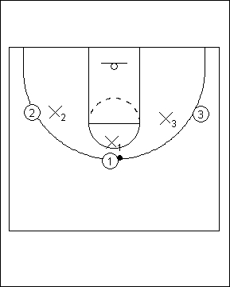

Catégorie : REBOND (Reb-12)
Déroulement
- Deux équipes de trois joueurs, une en attaque et l’autre en défense.
- On joue le trois contre trois à fond. Ce drill est effectué sous forme de concours et des points sont donc attribués. Un panier marqué vaut deux points et un rebond défensif un point (même si le panier est marqué). C’est l’équipe qui gagne le rebond qui joue ou rejoue en attaque la fois suivante.
- Pour donner plus d’importance au rebond, le but de l’exercice, on peut attribuer un point pour un panier et deux points pour un rebond.
Coaching points
- S’organiser en fonction des circonstances. Si on possède moins de dix joueurs à la séance, on n’occupe qu’un demi-terrain et on place une équipe en attente.
- On peut aussi disputer le même drill en quatre contre quatre ou même en cinq contre cinq.
- Insister beaucoup sur la volonté de disputer le rebond offensif, même en cas de panier marqué car cela rapporte un point et la possession suivante.